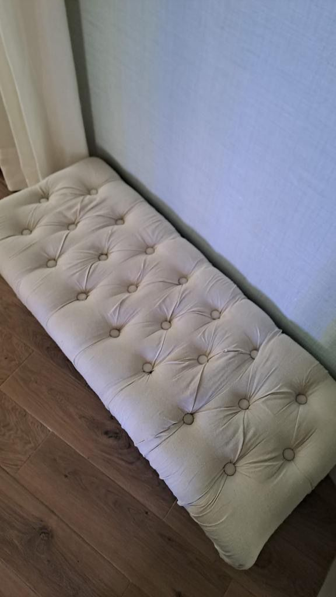

GRANADA & COSTA TROPICAL · FCT
Sofás · colchones · sillas · alfombras. Granada, Almuñécar y Costa Tropical.Sofas · mattresses · chairs · rugs. Granada, Almuñécar and Costa Tropical.

GRANADA & COSTA TROPICAL · FCT
LOCAL CARE · GRANADA
Valoramos tejido, manchas y estado antes de limpiar.We assess fabric, stains and condition before cleaning.
DÓNDE TRABAJAMOSWHERE WE WORK
Granada y Almuñécar como zonas principales. Para otras localidades de Costa Tropical, confírmanos tu código postal.Granada and Almuñécar are our core areas. For other Costa Tropical locations, send us your postcode.
GRANADA & COSTA TROPICAL · FCT
Envíanos 2–3 fotos y tu código postal por WhatsApp.Send 2–3 photos and your postcode on WhatsApp.
CUÉNTANOS QUÉ NECESITAS ↗TELL US WHAT YOU NEED ↗